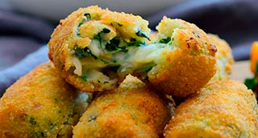

Bomba de Croquetas de espinacas con jamón a la catalana
Espinacas, Jamón, Pasas, Piñones

| Leche entera | 500 ml. |
| Cebolla fresca | 150 gr. |
| Espinacas | 200 gr. |
| Pasas de corinto | 50 gr. |
| Piñones | 50 gr. |
| Jamón picado | 150 gr. |
| Mantequilla | 100 gr. |
| Harina | 100 gr. |
| Cabeza de ajo | 1 un. |
| Pimienta blanca | 1 pz. |
| Curry | 1 c.c. |
| Nuez Moscada | 1 pz. |
| Sal | 8 gr. |
-
Masa de croquetas
- Asar la cabeza de ajos. Pelarlos dientes y reservarlas.
- Limpiar las espinacas, escaldarlas en agua con sal, enfriar con hielo, escurrir bien, prensar para que pierdan el agua y picarlas finamente. Reservar.
- Llevar la leche a ebullición junto a las especies y la sal, una vez levante el hervor retirar del fuego.
- Retírar una parte de la mezcla y triturar con los ajos asados hasta conseguir una crema fina, mezclar con el resto de la leche.
- Cortar el jamón en brunoise fina. Reservar.
- Tostar los piñones y picarlos. Hacer lo mismo con las pasas. Reservar.
- Picar la cebolla fresca finamente partes verdes y partes blancas. Reservar
- Colocar una cazuela a fuego suave, fundir la mantequilla y rehogar la cebolla sin que tome color ( aproximadamente 8/10 min).
- Añadir el jamón y dorar un minuto, agregar las espinacas, rehogar otro minuto y finalmente añadir pasas y piñones.
- Agregar la harina y cocer todo el conjunto a fuego muy lento durante unos 3 min.
- Agregar la mezcla de leche/cremoso de ajos poco a poco con la ayuda de unas varillas.
- Rectificar de sal y especies y retirar del fuego.
- Seguir batiendo la masa hasta enfriarla un poco.
- Colocar la masa en una bandeja y cubrir con papel de film a piel.
- Dejar enfriar al natural un par de horas y colocar la masa en la nevera un mínimo de 12 h. antes de bolear y empanar. Acabado/Sugerencias
- Procurar cocer bien la harina antes de añadir la leche, sino la masa cogerá gusto de masa cruda.
- Tapar bien con film, éste debe contactar con la masa para que no coja "costra".
- Dejar reposar un mínimo de 12 horas y proceder con el empanado.
- Servir como una bomba sobre un poco de salsa brava